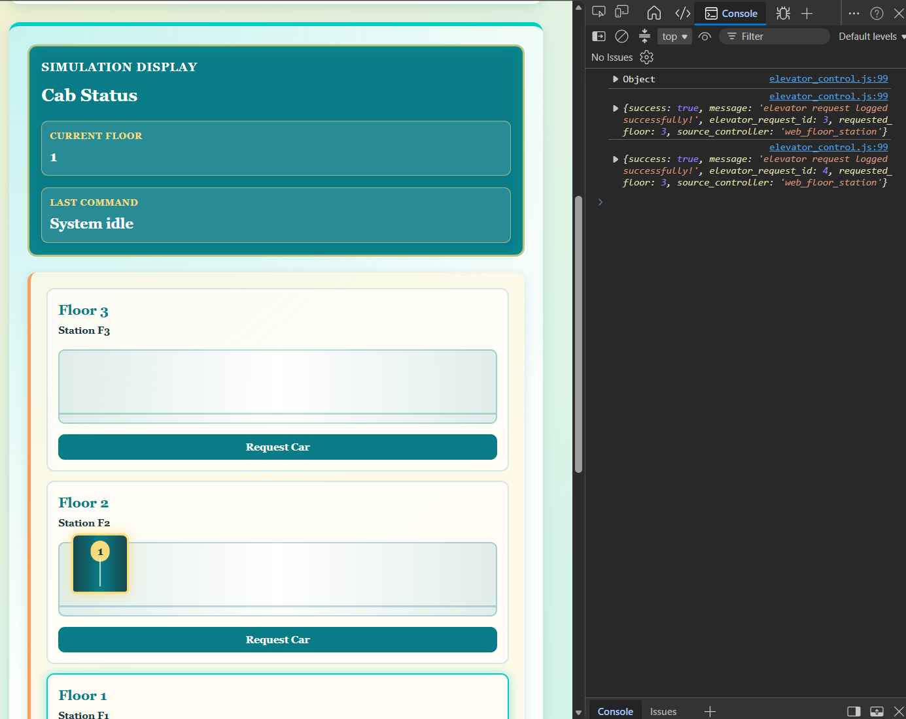

Established AJAX communication between the elevator-control JavaScript and PHP, logged remote floor requests into MariaDB, and synchronized the visual elevator with the newest database request.
Connected the elevator-control webpage to PHP and MariaDB so button presses could be sent through AJAX, validated, logged as elevator requests, and used to update the visual elevator only after a successful database response.
Key details
Purpose: Connect the elevator-control interface to the backend without reloading the page and store each remote floor request in the database.
Component or tool: JavaScript fetch/AJAX, PHP, JSON, PDO, MariaDB, and elevator_control.php
Result: Successfully sent floor requests from JavaScript to PHP, validated and inserted them into elevator_requests, returned JSON confirmations, and loaded the newest request when the page refreshed.
Team contribution: Nick Kapuka
Elevator_control.php and JS
JS and PHP communication
The Test
The first step was to get PHP and JS to communicate. The actual page is PHP while the cool animation and button-checking/page-updating functionality is JS.
For each button to actually register and be interpreted inside the PHP we need something called AJAX.
Asynchronous JavaScript and XML. It's a technique used to send and receive data from a server in the background without reloading the webpage. This uses JSON files and HTTP requests.
The rough procedure is:
user action:
User clicks a button and JS creates form-like data
request created:
JS creates a background HTTP request using fetch()
Server processing:
the server processes the request (PHP) and sends data back via JSON
page update:
JS reads the response and updates only the specific part of the page needed without reloading.
PHP:
From here, I had to let PHP accept the JS request (as seen in steps 2-3). This was done by the following code:
// elevator_control JS sends a POST request when an elevator button is pressed
// read it here
if($_SERVER['REQUEST_METHOD'] === 'POST') {
// tell JS that PHP will return a JSON file instead of HTML:
header('Content-Type: application/json');
// receive JS values
$submittedFloor = $_POST['requested_floor'] ?? '';
$sourceController = $_POST['source_controller'] ?? '';
// temporary test response
echo json_encode([
'success' => true,
'requested_floor' => $submittedFloor,
'source_controller' => $sourceController
]);
// don't render the rest of elevator_control.php
exit;
}
Essentially, this listens for a POST (sent via JS) and grabs the value into local PHP variables using $_POST.
It uses json_encode which converts a PHP array of style:
// send an elevator request to elevator_control.php
function sendElevatorRequest(floor, sourceController) {
// format values like normal form data using a constructor of URLSearchParams() (big ass Web API magic)
const requestData = new URLSearchParams();
// add a named value (floro) to the form-style request data ("requested_floor")
requestData.append("requested_floor", floor);
requestData.append("source_controller", sourceController);
// send an HTTP request without reloading the page
// POST sends the data to the PHP; content-type formats it like an HTML form;
// body is the actual floor/source values; response.json converts PHPs JSON response into a JS object
return fetch("elevator_control.php" , {
method: "POST",
headers: {"Content-Type": "application/x-www-form-urlencoded"},
body: requestData.toString()
})
.then(function (response) {
return response.json();
})
}
This is a bit more complicated and required a fair amount of YouTube videos to understand..., but it mostly lies with that fetch command.
requestData makes a new object with the URLSearchParams web API. It just has a bunch of built-in functions. Append and fetch are two of them.
.append is a built-in method from URLSearchParams that appends the submitted name, "requested_floor"
If the variable "floor" contains a 2, the JSON will read:
requested_floor=2
The second append does the same but for source_controller. Here, it will be "web_floor_station" or "website" or whatever else.
Content-Type tells PHP how the data is formatted, and here, it was specified that the data was encoded like a standard HTML form.
The last part converts the requestData object to string using toString(), a built-in method. It converts the object into readable text to send via the HTTP request.
Ultimately, that block says "send (toString)(requestData) as an HTTP request in the style of a regular HTML form to the 'elevator_controls.php' webpage"
However... Fetch does not return PHP's answer since there can be many delays. In the future, the PHP will have to run and execute, query mariaDB, log/pull data, and send back a response to the JS.
Because of this, Fetch returns an object called a Promise which represents a value that'll be available. A rough comparrison is function definitions in C where you tell the compiler "don't worry about this function, it'll be defined later."
Another way to think of it is, “I don’t have PHP’s response yet, but I promise to report back.”
A promise has three states:
1) Pending - operation unfinished and JS waiting
2) Fulfilled - operation finished successfully
3) Reject - operation failed
From here, we can use .then, a method belonging to Promise.
When the Promise is fulfilled, run this code is what the function of .then is.
When the Promise changes states, it runs this code
function (response) {
return response.json();
}
reponse.json() reads the response, interprets it as JSON, and converts into a JS value.
JS Pt 2
The next JS function was pretty messy, but it is just four callback functions that pass into each other in order of execution. This temporarily replaced the commented-out code snippet which moved the car to the floor selected. For now, we don't want movement - just communication testing.
// move car to floor when a floor button is clicked
/*
floorButtons.forEach(function (button) {
button.addEventListener("click", function () {
moveCarToFloor(button.dataset.floor, "floor");
});
});
*/
// replacing with a temporary function:
floorButtons.forEach(function (button) {
button.addEventListener("click", function () {
const floor = button.dataset.floor;
sendElevatorRequest(floor, "web_floor_station")
.then(function (responseData) {
console.log(responseData);
})
.catch(function(error) {
console.error("Elevator request failed", error);
});
});
});
function (button) — runs once for every button click
function () — runs later when that button is clicked.
function (responseData) — runs later when PHP responds successfully.
function (error) — runs later if the asynchronous process fails.
The order is:
Visit each button
floorButtons.forEach(function (button) {
Since there are three floors and six buttons (three car controller; three floor controllers), this function loops through (forEach) those HTML button elements:
First run: button = Floor 3 button
Second run: button = Floor 2 button
Third run: button = Floor 1 button
Wait for a click
button.addEventListener("click", function () {
Simple. Wait for a button to be clicked.
The code inside,
const floor = button.dataset.floor;
grabs the HTML element of "data-floor" using JS's dataset object.
<button class="floor-request-button" data-floor="2">
Request Car
</button>
Not all these values have to be modified right away. I'll start with writing to these values:
Table Value
new value
request_type
'remote'
requested_floor
pull from JS code
requested_by_user_id
$_SESSION['user_id']
source_controller
received from JS/website
The other fields can be ignored for now, the goal is for a button click to log each floor uniquely into the DB.
Rewriting the PHP
From here, the PHP logic was changed as such:
There were two major blocks. One handled edge-cases for the different values as seen below:
// convert submitted floor into a valid integer
$requestedFloor = filter_var($submittedFloor, FILTER_VALIDATE_INT);
// create a 3-element array (since we have 3 floors... for now)
$allowedFloors = [1, 2, 3];
// reject any other values
if($requestedFloor === false || !in_array($requestedFloor, $allowedFloors, true)) {
// print the error message
echo json_encode([
'success' => false,
'message' => 'invalid elevator floor'
]);
exit;
}
// once again, only use valid sources
$allowedSources = ['web_floor_station', 'web_car_controller'];
// and once again, handle valid source controllers (from the web)
// reject unknown controller names
if(!in_array($sourceController, $allowedSources, true)) {
// print message
echo json_encode([
'success' => false,
'message' => 'invalid source controller'
]);
exit;
}
// grab the user ID
// login.php stored it in this session
$requestedByUserID = $_SESSION['user_id'] ?? null;
// if empty, get yo ahh outta here
if($requestedByUserID === null){
echo json_encode([
'success' => false,
'message' => 'the logged-in user could not be identified'
]);
header('Location: ../login.html');
exit;
}
Nothing of note here except for two functions:
filter_var();
// and
in_array()
filter_var($string, FILTER_VALIDATE_INT) basically validates string to int. In my notes I had it as:
filter_var(..., FILTER_VALIDATE_INT)
Validates and converts an integer-like value
"8" becomes 8; "hello" becomes false
in_array() searches if a value exists within an array's elements. In this example,
in_array($requestedFloor, $allowedFloors, true)
Checks if the value wanted, $requestedFloor, is within the $allowedFloors array. true means strict comparison.
Means integer 2 must match integer 2, and "2" won't match with integer 2.
The next PHP block was the try-catch that actually queried the data into the DB:
try {
// insert into DB
$query = "
INSERT INTO elevator_requests (
request_type,
requested_floor,
requested_by_user_id,
source_controller
)
VALUES (
:request_type,
:requested_floor,
:requested_by_user_id,
:source_controller
)
";
$statement = $pdo->prepare($query);
$params = [
'request_type' => 'remote',
'requested_floor' => $requestedFloor,
'requested_by_user_id' => $requestedByUserID,
'source_controller' => $sourceController
];
$result = $statement->execute($params);
if($result) {
// retrieve the auto-generated elevator_request_id
// type-cast to int since we need it to be int for sending it back to JS
$elevatorRequestID = (int) $pdo->lastInsertId();
// send the successful query back to JS
echo json_encode([
'success' => true,
'message' => 'elevator request logged successfully!',
'elevator_request_id' => $elevatorRequestID,
'requested_floor' => $requestedFloor,
'source_controller' => $sourceController
]);
// query failed/request not logged
} else {
echo json_encode([
'success' => false,
'message' => 'elevator request was not logged, please try again'
]);
}
}
catch (PDOException $e)
{
error_log($e->getMessage());
// report message back to JS too
echo json_encode([
'success' => false,
'message' => 'a database error occured that prevented the elevator request'
]);
}
Most of this code is basically the same as any other query seen in my logbooks in the past. The only few exceptions are:
$elevatorRequestID = (int) $pdo->lastInsertId();
This uses two 'new' things - typecast and a new function. The type-cast to int is done since the function, lastInsertId() returns the auto-generated ID as a string but we want the value as an int for json_encode().
Everything else is basically a normal query.
Testing it:
Now, to test it. The expected results are two things:
When a button is pressed on the website (for elevator control),
The JS will log it in web-devtools in JSON format.
The MariaDB will be updated with the new entry.
Testing the JS logging, I received the following in console:
Note, it "started" at 3 since I had one previous attempt where it logged it into the DB but didn't echo it in the console since I forgot a semi-colon...
And for visual proof (please ignore the main page for now, the JS that updates it has been turned off due to testing; maintenance mode ahh):

Successful remote elevator request shown in the browser console
Remote elevator requests stored in the MariaDB table
Only updating the elevator once the request was logged successfully
Since we don't want the webpage to move automatically, regardless of whether the request was logged or not, we need to add logic for it to only move when PHP says it's allowed.
Note, in phase 3 this will have to be changed to check for this value in the SQL:
Both of these are currently NULL, but they will be updated once the real elevator actually moves. It will update the DB and say "yep I'm on floor 3 now" which is when the elevator on the website will be updated/move to floor 3 there. Basically, sync the physical elevator to the one on the website using the DB.
From here, I got back into the JS development...
The first JS task was to handle PHP's response. The visual elevator should only move if everything went good on PHP's end, so we account for that in this function:
// new function to handle a successful PHP response
function handleResponse (responseData) {
// PHP can still send a response successfully but SQL can fail, handle that by ensuring that nothing returns false (from json_encode())
if(responseData.success === true) {
// HTML data attributes contain strings so convert the floor to a string
// php returns requested_floor: 3, while HTML uses "3"
const floor = String(responseData.requested_floor);
// moveCarToFloor excepts "floor" or "car"
// let floor be the default and change it below if needed
let commandSource = "floor";
// determine who submitted the request
if (responseData.source_controller === "web_car_controller") {
// switch to car
commandSource = "car";
}
if (responseData.movement_allowed === false) {
// sync page to DB door state
updateDoorDisplay(true);
lastCommandDisplay.textContent = "Request #" + responseData.elevator_request_id + " logged for floor "
+ floor + " - cannot move with doors open";
return;
}
// move the visual elevator only after the request was logged
moveCarToFloor(floor, commandSource);
// display the DB request number confirmation by stitching strings together
lastCommandDisplay.textContent = "Request #" + responseData.elevator_request_id + " logged for floor " + floor;
} else {
// PHP responded but it came false (validation issue or DB failure)
lastCommandDisplay.textContent = "requested rejected" + responseData.message;
}
}
The:
if(responseData.success === true)
Is what ensures both PHP and SQL did their jobs successfully.
moveCarToFloor(floor, "floor");
Calls the animation functions which moves the car to the proper positions.
lastCommandDisplay.textContent just shows prints data to the page.
Additionally, a function w as made to handle an actual AJAX failure - JSON didn't return properly or whatever other issue:
// handle an AJAX failure - network failure, invalid JSON response, etc.
function handleRequestFail(error) {
lastCommandDisplay.textContent = "the elevator request could not be sent";
console.error("elevator request failed due to: ", error);
}
Pretty simple. If error, show error message and log it.
Note taking issue
From here, I continued the development further. Unfortunately, my Obsidian was having loading issues so my note-taking in the moment wasn't possible. Instead, the rest of this entry is mostly from memory in order of events. While discussing a previous section, you may see future additions in the same image.
Reading from DB for refresh sync
After that point, I believe comms were just established successfully, but the full cycle was not fully setup. The requests were logging into the DB, but the next part was to read from the DB everytime the webpage was updated. This was done using more PHP logic to query the DB and read from it using fetch.
// create a dynamic default display if there are no elevator requests - pull from DB to keep it updated:
$initialFloor = 1;
$initialRequestID = null;
$initialSource = 'floor';
$initialStatus = 'idle';
try {
// query has no user input so a prep statement doesn't have to be used:
$query = "
SELECT
elevator_request_id,
requested_floor,
source_controller,
request_status
FROM elevator_requests
ORDER BY elevator_request_id DESC
LIMIT 1
";
// run the query
$statement = $pdo->query($query);
// retireve the newest row or false if empty
$latestRequest = $statement->fetch();
if($latestRequest) {
$initialFloor = (int) $latestRequest['requested_floor'];
$initialRequestID = (int) $latestRequest['elevator_request_id'];
$initialStatus = (int) $latestRequest['request_status'];
if($latestRequest['source_controller'] === 'web_car_controller') {
$initialSource = 'car';
}
}
} catch (PDOException $e) {
// Keep the default Floor 1/System idle display if loading fails.
error_log($e->getMessage());
}
This is outside of the $_SERVER['REQUEST_METHOD] === 'POST' and is the default loading of the webpage/php. That means it will pull from the DB and write stuff in as soon as the page loads.
Additionally, here are two more associated JS functions that I'm unsure if I mentioned elsewhere, but they're directly connected to the elevator:
// moves the elevator car to the desired floor based on the floor selected and source (floor controller/cab controller)
function moveCarToFloor(floor, commandSource) {
if (!elevatorCar) {
return;
}
elevatorCar.style.bottom = carPositions[floor];
currentFloorDisplay.textContent = floor;
carScreen.textContent = floor;
floorRows.forEach(function (row) {
row.classList.remove("active-floor");
if (row.dataset.floor === floor) {
row.classList.add("active-floor");
}
});
carButtons.forEach(function (button) {
button.classList.remove("active-car-button");
if (button.dataset.floor === floor) {
button.classList.add("active-car-button");
}
});
}
// if an SQL request exists, position the visual elevator at that floor
if (initialRequestID !== "") {
moveCarToFloor(initialFloor, initialSource);
// moveCarToFloor changes the command text so it must be replaced with the DB request info afterward
lastCommandDisplay.textContent = "request #" + initialRequestID + " for floor " + initialFloor;
}
The one above handles the physical movement of the elevator.
The "functions" below is what handles the processing of the "request car" and "go to floor 3"
floorButtons.forEach(function (button) {
// give this specific button (in the loop) instructions for what to do when clicked
button.addEventListener("click", function () {
// we already have the specific button from the forEach loop
const floor = button.dataset.floor;
lastCommandDisplay.textContent = "Sending request for Floor " + floor + "...";
// send the request and wait for PHP's answer
sendElevatorRequest(floor, "web_floor_station")
// PHP responded and its JSON was decoded
.then(handleResponse)
// the network request or JSON decoding failed
.catch(handleRequestFail);
});
});
// replace old car call with new one:
carButtons.forEach(function (button) {
// give this specific button (in the loop) instructions for what to do when clicked
button.addEventListener("click", function() {
// we already have the specific button from the forEach loop
const floor = button.dataset.floor;
// update command display
lastCommandDisplay.textContent = "sending car-controller request for floor " + floor + " ...";
// use existing AJAX function but identify source as car controller
sendElevatorRequest(floor, "web_car_controller")
// once PHP responded and its JSON is decoded
.then (handleResponse)
// network request or decoding failed
.catch (handleRequestFail);
});
});
That was about it for this entry, the goal for tomorrow is the toggle switch + sabbath mode triggers.